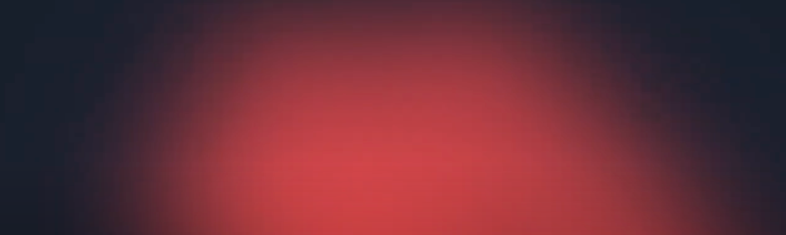
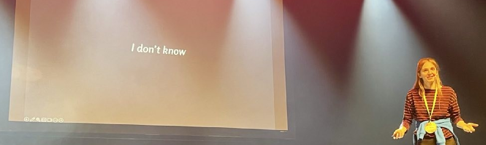
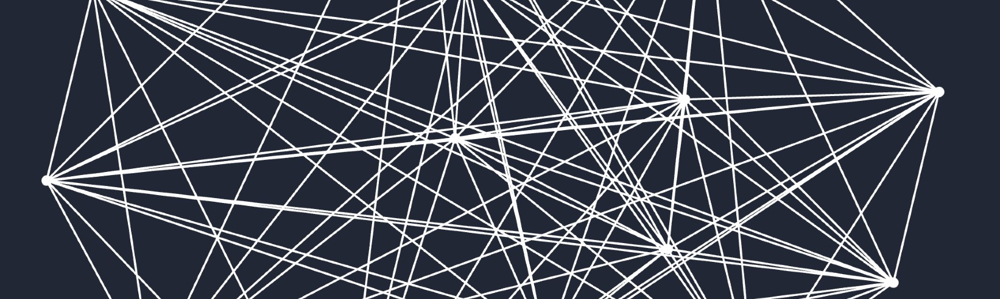
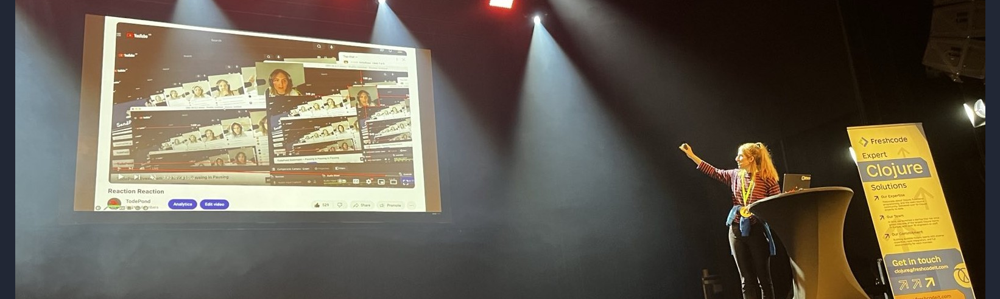
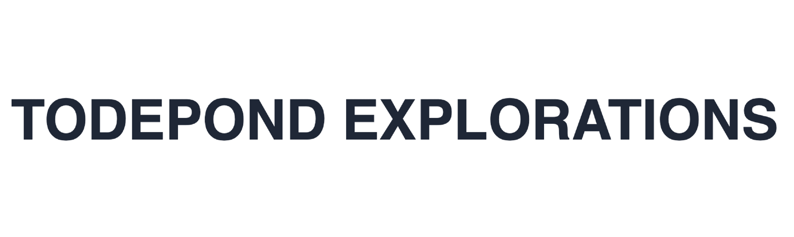
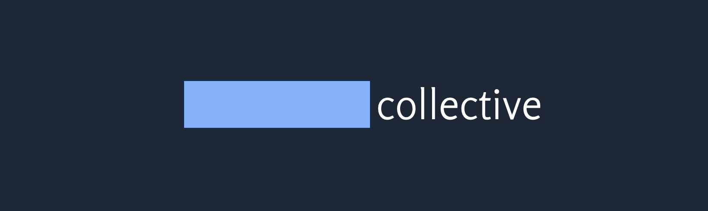

The weekly TODEPOND PONDCAST is for paying supporters only.
Please only listen / read if you've
paid
:)
Welcome back to another weekly episode of the...
🐸 TODEPOND PONDCAST 🐸
What's new this week?
I've been working more on the next video, Top 99 Ways To Make Sand, and I've been using heavy use of blur for a money shot in the intro.
"Money shot" can mean different things (apparently) but I'm using the meaning that means a shot of a film that's expensive to make, but considered important, or impactful to the film on the whole. For me, it usually means a long "one shot".
"One shot" means a shot of a film that doesn't have any cuts in it. It's one continuous shot, like Birdman and Beyond the Infinite Two Minutes.
Previous money shots include:
- The dream sequence of Screens.
- The zoom sequences of Cells.
- The come out sequence of Arrows.
- The title sequence of Arrows.
It feels like a required component of the Things in Things in Things series, and I'm doing more and more of them as time goes on.
I've been using heavy use of blur for a money shot in the intro. Unfortunately, it looked kinda bad to start with. When I rendered the video, it gained loads of visual artifacts, so I tried a whole bunch of things, like changing rendering settings, tweaking the numbers, using a different tool.
And I eventually made it better by switching to a combination of different blurs, instead of using just one. It also increased rendering speed a lot.
Talk season has started!
I have four talks lined up in a very short space of time.
First up, the Heart of Clojure conference in Leuven in Belgium. I don't speak any clojure, but they're open minded enough to have me do the opening keynote anyway. Naturally, my talk is about openness. It's called WHAT IT MEANS TO BE OPEN.
Then I'm at Causal Islands in Berlin to give a keynote about the tadi web. It'll be my first time speaking about the tadi web openly. I've been practising internally at Ink & Switch, and getting a load of good feedback.
THEN I'm presenting Arroost at LIVE at SPLASH.
THENNN I'm presenting Dialogues on Natural Code.
Some of these require more prep than others. For example, the Natural Code one needs a bit more work.
Let's keep looking through the reviewer feedback for my Arroost essay.
Okay, Reviewer C summarises Arroost's focus on mess quite well:
There are several ways that Arroost controls the user experience to encourage messy creation:
- edges propagate activity according to a fixed beat, which cannot be changed
- meanwhile, node recordings may be of arbitrary length but still play in their entirety once activated, which leads unavoidably to messy overlaps between different node recordings
- the vertical positioning of a node changes the pitch of its recorded sound, which makes it sound silly and discourages the user from fiddling with spatial organization
- edges can be made to activate the target node one beat before the source node, which can be challenging to predict ahead of time as to how it affects the overall sound
And Reviewer A had a question about that:
My first question was what this could mean for more "traditional" programming —i.e., even the MakeReal stuff in tldraw —what does this mean for coding web UIs or algorithms or spreadsheets? What does a messy spreadsheeting tool look like? Some additional focus on that, at/towards the end, could be beneficial.
I guess I could answer this question within the presentation.
However, it isn't really the point of my essay. I'm not interested in telling you "how to be messy". I think it would be harmful to my message to claim that I've "figured it out", because my point is that we haven't spent enough time on this sort of thing. We haven't spent enough time trying to help people get past their emotional blockers. So we don't know how to use mess to overcome that. My answer to the question is:
"I don't know."
And now... It's been so long since the previous TODEPOND PONDCAST that I need to a double decker episode to catch up. Here's the second TODEPOND PONDCAST of this PONDCAST:
Welcome back to another weekly episode of the...
🐸 TODEPOND PONDCAST 🐸
What's new this week?
I gave the opening keynote at Heart of Clojure!!!!!!!
It was such a nice conference. It's the best conference I've ever been to, by a long long long way. The community was fab, the organisation was impeccable, the talks and events and activities were all stellar. I saw lots of old friends and made many new ones, and Leuven was a beautiful backdrop.
I'm still recovering from the conference, both physically and emotionally, so I'll write it up properly at some point in the next couple of weeks. But yeah, the talk went really well I think. I learned a lot and I'd do a lot different next time, as always, but I'm pleased with how it went, and people kept coming up to me to talk about it for the following three days, which was really nice.
Thank you Arne! And thank you to the whole Heart of Clojure community!
If you've been following along these pondcasts for a while, you'll know that I've been trying to figure out how to frame my work in a way that brings it some semblence of legitimacy. I started out just making silly youtube videos, but now I'm doing more. It's art or research or something? Maybe? I don't know!
What the hell am I doing? What do I tell people?
Hmm..
The "video" has always been the highest-level output of my work. Every other thing I do... the talks, the demos, the writing... it was all supposed to feed into the videos. But nowadays, that's not how it works for me.
No. The videos are just one of many parts that feed into higher-level themes and projects. For example... figuring out spatial programming... figuring out scrappy fiddles... figuring out the tadi web... I could call these "projects", or I could call them something else, like tracks.
Anyway, I'm calling them explorations and you can see them all at todepond.com/explore.
The biggest two so far are Cellpond and Arroost. It's nice to collect together all the work I've done on them so far.
Speaking of legitimacy... Another thing I've been thinking about for a while is how to brand my exploratory work.
The "Todepond" brand is quite a silly one, and I like that. I don't want to make it more serious.
So I was wondering about introducing a new umbrella organisation or name to encompass everything I do. This would let me start to build up a portfolio of slightly more serious work. I think this is important. Of course it's important!
I briefly joked around about "Todepond Industries" or something, but that only sounded even more silly.
As time went on, I started to realise that this slightly-more-serious identity shouldn't be Todepond-related at all. So it shouldn't be a "Lu Wilson" thing at all. Instead, it should be something I do with other people, like a group identity.
So... I've been speaking about this with a few close friends of mine for quite a while, and it looks like it's going to happen in some form. Originally we were thinking of naming the collective as a "studio", but that could indicate that it's a studio that works together, or you can hire. So it's currently settles on being a "collective".
It'll be a collective of independent researchers/artists/explorers/etc who all share some values and high standards.
Stay tuned for more!!!!!!!!!!!!
That was a long one... Thank you for listening and/or reading, and thank you for following along with everything I do. This past week represents a big moment for me, and that's thanks to you in a big way. Thank you supporting me, whether you're old or new. I'm happy you're here. Hey. Wherever you are in the world... whatever you're doing... I hope you have a great week. 🐸
Days since tode fell asleep: 626Back to the pondcast.